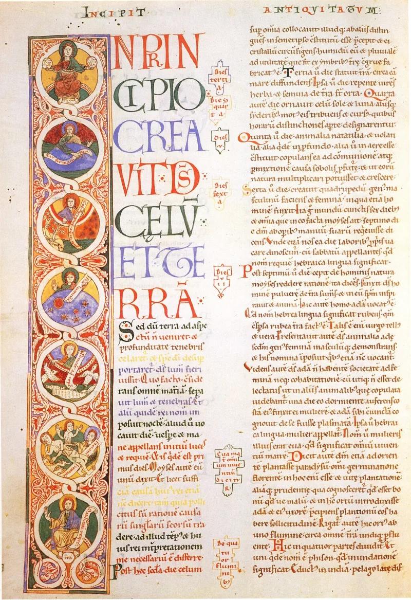
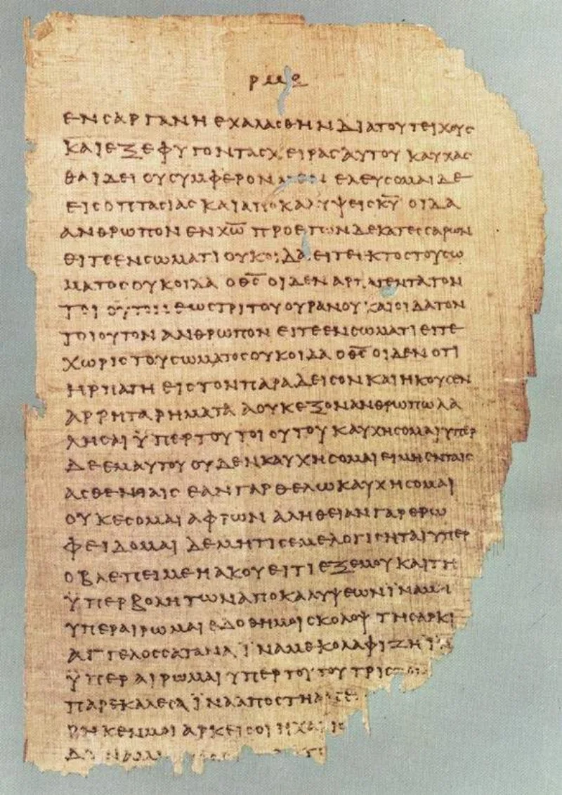
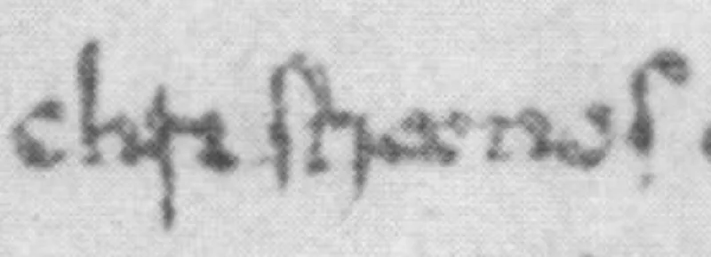

No good counter-argument has been published by Muslim scholars.
Quran 4:157 says of the Jews: "they did not kill him, nor did they crucify him; but another was made to resemble him to them." Quran 4:158 says Allah raised Jesus to Himself. This is the sharpest disagreement between the two faiths.
The verse was written about 600 years later, over a thousand kilometres away. All four gospels report the crucifixion.
So does a creed inside 1 Corinthians 15:3-8, dated within a few years of the event. So do two non-Christian historians: Josephus, in Antiquities 18.3.3, and Tacitus, in Annals 15.44.
Bart Ehrman is an agnostic. He writes that "one of the most certain facts of history is that Jesus was crucified on orders of the Roman prefect of Judea, Pontius Pilate." Gerd Lüdemann is an atheist.
He writes that "the fact of the death of Jesus as a consequence of crucifixion is indisputable."
Classical Sunni teaching says someone was substituted. Tafsir names Judas, Simon of Cyrene, or a volunteer disciple.
That is why every witness honestly reported a crucifixion. A miracle escapes historical method by definition.
The Ahmadiyya say instead that Jesus survived the cross. A smaller scholarly line, documented by Todd Lawson and Mahmoud Ayoub, reads 4:157 as denying only that the Jews achieved it.
Strong for you, and there is no counter-evidence. Substitution cannot be tested, and it makes God the author of the mistake.
The Lawson and Ayoub reading is the cleverest move, because it stops denying the event. But it saves the verse by giving up what Muslims have always claimed.
"Historians who do not believe in Jesus still agree he was crucified. Where would you start looking?"



They say Allah made another man look like Jesus, and raised Jesus alive.
The classical Sunni answer is substitution. Allah cast Jesus's likeness onto another man. The tafsir, Islam's classical commentaries, name Judas, Simon of Cyrene, or a volunteer disciple. That man was crucified. Allah raised Jesus alive instead (4:158). The line that it was made to appear so to them explains the records. Every witness honestly reported a crucifixion, so every source does too. A miracle escapes historical method by definition.
The Ahmadiyya hold something different. They say Jesus survived the cross. A smaller scholarly stream is documented by Todd Lawson and argued by Mahmoud Ayoub. It reads 4:157 as denying only the Jews' boast that they did it. God's plan won out. On that reading the event itself is neither affirmed nor denied.
Strong for you: nothing in history stands against it.
The swap story cannot be tested, by design. It grants all the evidence, then overrules it with an unseen miracle. That miracle is reported six centuries later. This gives up history rather than answering it. It also makes God the author of the mistake that founded the church.
The Lawson and Ayoub reading is the strongest move, because it stops denying the event. But it saves the verse by giving up what Muslims have always taught. Read the old way, 4:157 stands against the best-attested event in ancient history. Nothing points the other way.